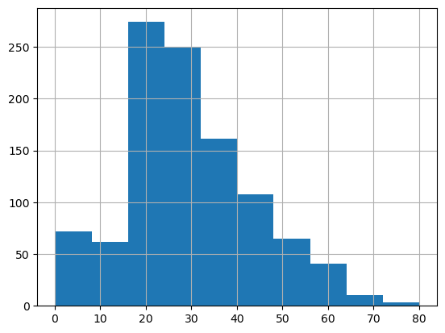

Pandas : Les bases et Analyse du Titanic
Sommaire :
- Chapitre 1 : Charger vos données dans un DataFrame Pandas
- Chapitire 2 : Nettoyer votre Dataset avec drop(), dropna() et fillna()
- Chapitre 3 : Groupby() et value_counts()
- Chapitre 4: Exercice et Solution
📂 Télécharger la base de donnée
import numpy as np
import matplotlib.pyplot as plt
import pandas as pd
1. Charger vos données dans un DataFrame Pandas
Les options les plus courantes :
- read_csv
- read_excel
data = pd.read_excel('titanic.xls')
data.shape
data.head()
-
pclass survived name sex age sibsp parch ticket fare cabin embarked boat body home.dest
0 1 1 Allen, Miss. Elisabeth Walton female 29.0000 0 0 24160 211.3375 B5 S 2 NaN St Louis, MO
1 1 1 Allison, Master. Hudson Trevor male 0.9167 1 2 113781 151.5500 C22 C26 S 11 NaN Montreal, PQ / Chesterville, ON
2 1 0 Allison, Miss. Helen Loraine female 2.0000 1 2 113781 151.5500 C22 C26 S NaN NaN Montreal, PQ / Chesterville, ON
3 1 0 Allison, Mr. Hudson Joshua Creighton male 30.0000 1 2 113781 151.5500 C22 C26 S NaN 135.0 Montreal, PQ / Chesterville, ON
4 1 0 Allison, Mrs. Hudson J C (Bessie Waldo Daniels) female 25.0000 1 2 113781 151.5500 C22 C26 S NaN NaN Montreal, PQ / Chesterville, ON
data.describe()
-
pclass survived age sibsp parch fare body
count 1309.000000 1309.000000 1046.000000 1309.000000 1309.000000 1308.000000 121.000000
mean 2.294882 0.381971 29.881135 0.498854 0.385027 33.295479 160.809917
std 0.837836 0.486055 14.413500 1.041658 0.865560 51.758668 97.696922
min 1.000000 0.000000 0.166700 0.000000 0.000000 0.000000 1.000000
25% 2.000000 0.000000 21.000000 0.000000 0.000000 7.895800 72.000000
50% 3.000000 0.000000 28.000000 0.000000 0.000000 14.454200 155.000000
75% 3.000000 1.000000 39.000000 1.000000 0.000000 31.275000 256.000000
max 3.000000 1.000000 80.000000 8.000000 9.000000 512.329200 328.000000
2. Nettoyer votre Dataset avec drop(), dropna() et fillna()
data = data.drop(['name', 'sibsp', 'parch', 'ticket', 'fare', 'cabin', 'embarked', 'boat', 'body', 'home.dest'], axis=1)
data = data.dropna(axis=0)
data.shape
-
(1046, 4)
data['age'].hist()

3. Groupby() et value_counts()
data.groupby(['sex']).mean()
-
pclass survived age
sex
female 2.048969 0.752577 28.687071
male 2.300912 0.205167 30.585233
data.groupby(['sex', 'pclass']).mean()
-
survived age
sex pclass
female 1 0.962406 37.037594
2 0.893204 27.499191
3 0.473684 22.185307
male 1 0.350993 41.029250
2 0.145570 30.815401
3 0.169054 25.962273
data['pclass'].value_counts()
-
pclass
3 501
1 284
2 261
Name: count, dtype: int64
data[data['age'] < 18]['pclass'].value_counts()
-
pclass
3 106
2 33
1 15
Name: count, dtype: int64
4. Exercice et Solution
- Créer des catégories d'ages avec la fonction map() de pandas
- Créer des catégories de genres avec cat.codes
💡 Cliquez ici pour voir la solution
Solution
def category_ages(age):
if age <= 20:
return '<20 ans'
elif (age > 20) & (age <= 30):
return '20-30 ans'
elif (age > 30) & (age <= 40):
return '30-40 ans'
else:
return '+40 ans'
data['age'] = data['age'].map(category_ages)
data['age']
-
#data['age'] = data['age'].map(category_ages)
data['age']
data['sex'].astype('category').cat.codes
-
0 0
1 1
2 0
3 1
4 0
..
1301 1
1304 0
1306 1
1307 1
1308 1
Length: 1046, dtype: int8